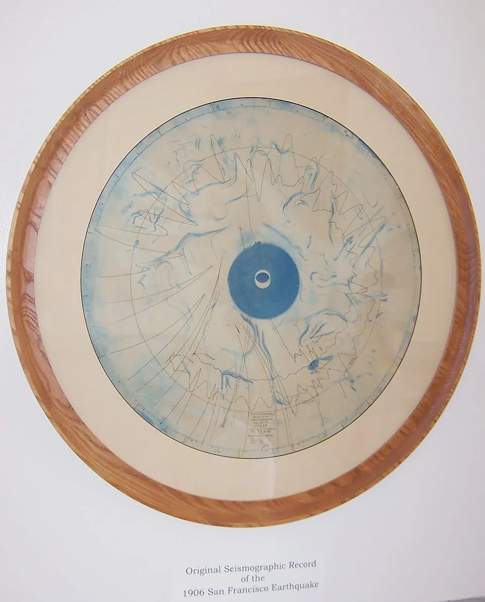

Dünya’nın merkezine inip oradan örnek almak mümkün değil. Buna rağmen bilim insanları gezegenin iç yapısı hakkında şaşırtıcı ölçüde ayrıntılı bilgiye sahip. Bunun başlıca nedenlerinden biri depremlerdir: bir deprem enerjiyi dalgalar hâlinde çevresine yayar ve bu dalgaların Dünya içindeki yolculuğu, görünmeyen katmanları anlamamıza yardım eder.
Sismogramdaki izleri okumak
Sismometreler, zemindeki hareketleri ölçer; bu ölçümlerin zaman içindeki çizgisel kaydı sismogram olarak adlandırılır. Bir depremden çıkan dalgalar farklı güzergâhlardan ilerlediği ve farklı hızlarda yayıldığı için istasyonlara aynı anda varmaz. Sismologlar kayıtları karşılaştırarak ilk gelen dalgaları, daha sonra ulaşan titreşimleri ve bunların kaynağa göre konumlarını belirler.
Bu kayıtlar yalnızca sarsıntının ne zaman ve ne kadar güçlü hissedildiğini göstermez. Dalgaların yol boyunca geçtiği maddeler de hızlarını ve yönlerini değiştirir. Dolayısıyla birçok istasyonda ölçülen varış zamanları, Dünya’nın içinden geçen doğal bir tarama sinyali gibi kullanılabilir.
İki temel dalga: P ve S
P dalgaları (birincil dalgalar), hareket doğrultusunda sıkışma ve genişleme yaratan boyuna dalgalardır. Katıların yanı sıra sıvılardan da geçebilirler ve genellikle sismometreye ilk ulaşan deprem dalgalarıdır. S dalgaları (ikincil dalgalar) ise zemini ilerleme yönüne dik biçimde kesme hareketiyle titreştirir. Sıvılar kesme gerilimini taşıyamadığı için S dalgaları sıvı bir ortamda ilerleyemez.
Bir istasyonda P ve S dalgalarının gelişleri arasındaki süre, depremin uzaklığı hakkında ipucu verir. Fakat asıl önemli olan, farklı uzaklıklardaki çok sayıda kaydın birlikte değerlendirilmesidir. Dalga hızındaki değişimler kayanın bileşimi, yoğunluğu, sıcaklığı ve fiziksel hâliyle ilişkili olduğundan, varış süreleri yer altındaki sınırlar hakkında bilgi taşır.
Dalgaların gölge bölgeleri
Dünya’nın her yanındaki istasyonlardan toplanan kayıtlar, S dalgalarının gezegenin belirli uzaklıktaki bölgelerine doğrudan ulaşmadığını gösterir. Bu kayıp, dalgaların enerjisinin rastgele sönmesinden kaynaklanmaz: S dalgaları sıvı dış çekirdekten geçemez. Bu nedenle bilim insanları dış çekirdeğin sıvı olduğu sonucuna varır.
P dalgaları sıvı dış çekirdekten geçebilir; ancak bu katmanla karşılaştıklarında hızları değişir ve yolları kırılarak bükülür. Dalgaların bazı uzaklıklarda doğrudan gözlenmemesi, bazılarınınsa çekirdeğin ötesinde yeniden kaydedilmesi bir P-dalgası gölge bölgesi oluşturur. Bu örüntü, yalnızca katmanların varlığını değil, aralarındaki sınırların ve maddenin özelliklerinin de anlaşılmasını sağlar.
Dış çekirdeğin çevresinde, P dalgalarının davranışı Dünya’nın merkezindeki iç çekirdeğin katı olduğuna dair kanıtlarla birlikte değerlendirilir. Böylece gezegenin merkezinde katı bir iç çekirdek, onu çevreleyen sıvı bir dış çekirdek bulunduğu sonucuna ulaşılır. Bu katmanların yapısı, sismik kayıtlarla kurulan modelin parçasıdır; çekirdeğin kendisi doğrudan görülmüş değildir.
Yerin üç boyutlu haritası
Bilim insanları, bir dalganın beklenen varış zamanı ile gözlenen zamanı arasındaki farkı dünyanın farklı bölgelerinden gelen çok sayıda kayıtla karşılaştırır. Dalgaların bazı alanlarda daha hızlı, bazılarında daha yavaş ilerlemesi yer altındaki sıcaklık, bileşim ve kaya yapısı farklılıklarına işaret edebilir. Bu bilgileri birleştiren sismik tomografi, Dünya’nın içindeki yapıları üç boyutlu olarak modellemeye yarar.
Tomografi, gezegenin içinin doğrudan çekilmiş bir fotoğrafı değildir. Sonuç; sınırlı ölçümlerin, dalgaların fiziksel davranışına ilişkin bilgilerin ve matematiksel hesaplamaların birlikte yorumlanmasıyla elde edilen bir modeldir. Yeni depremler ve daha hassas istasyonlar geldikçe model de geliştirilebilir. Yine de bu yöntem, yüzeyin binlerce kilometre altındaki büyük ölçekli farklılıkları incelemenin en güçlü yollarından biridir.
Deprem kayıtları bize ne anlatır?
Bir deprem olduğunda sismometrelerin kaydettiği titreşimler, yıkıcı sarsıntının ötesinde bir bilimsel iz bırakır. P ve S dalgalarının geliş sıraları, hızları, büküldükleri sınırlar ve ulaşamadıkları bölgeler birlikte incelendiğinde kabuk, manto ve çekirdek hakkında çıkarımlar yapılabilir. Böylece depremler, Dünya’nın içine açılan pencereler değilse bile, derinliklerden geçen ve ölçülebilen sinyaller hâline gelir.
Kaynaklar
- U.S. Geological Survey, “Inside the Earth” — Dünya’nın katmanları ile sıvı dış ve katı iç çekirdeğin yapısı.
- Incorporated Research Institutions for Seismology (IRIS), “Seismic Waves and the Earth’s Interior” — sismik dalgalar ve Dünya’nın iç yapısının yorumlanması.
- Fotoğraf: Introvert, 1906 San Francisco depremine ait özgün sismogram kaydı, Wikimedia Commons, CC BY 2.5.